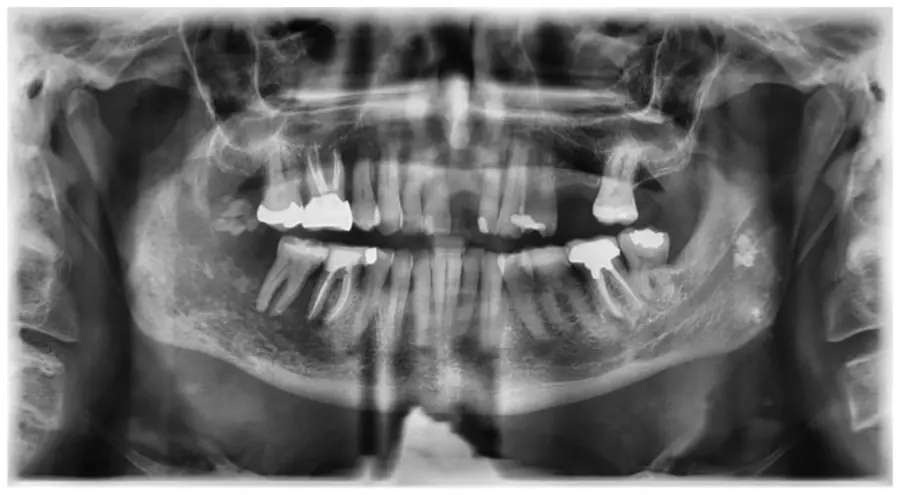
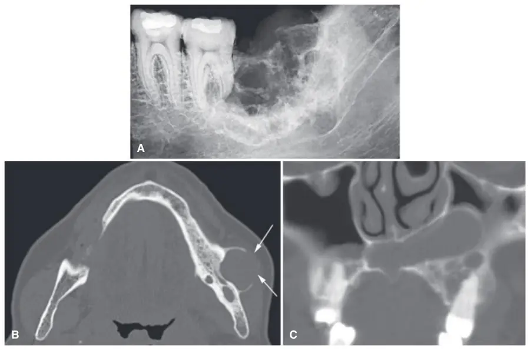

نسخه استخراجشده؛ ترجمه یا تأیید علمی انجام نشده است. وضعیت: captured
کارسینوم سلول سنگفرشی از تهاجم سلولهای اپیتلیالی بدخیم از راه غشای پایه به بافت همبند زیرین آغاز میشود و سپس به فضاهای بافتی مجاور گسترش مییابد. و از عوامل ویروسی، پاپیلوماویروس انسانی و ویروس اپشتین–بار در برخی کارسینومهای لوزه، زبان و حنجره درگیر دانسته شدهاند.

و نشانهی بالینیای که در معاینه باید بشناسی: ضایعه بهصورت سطح سفید و/یا قرمز شروع میشود، سپس نکروز و زخم میشود و حاشیهی برگشته یا سفتشده (rolled or indurated) پیدا میکند — و این «نشانهی نفوذ سلول بدخیم به بافتهای طبیعی مجاور» است.
و سایر یافتههای بالینی: لنفنودهای گردنی بدون درد که ممکن است به ساختارهای زیرین چسبیده باشند یا نباشند، تودهی قابل رؤیت بافت نرم، تغییر حس، بوی بد، تریسموس، لقی دندان، و خونریزی. ضایعات بزرگ میتوانند راه هوایی، دهانهی شیپور استاش (و در نتیجه شنوایی) یا نازوفارنکس را مسدود کنند.
محل شایع: کف دهان، ناحیهی مثلث رتروملار مندیبل و نواحی مجاور؛ و محل شایع تهاجم به استخوان، سطح لینگوال مندیبل مجاور همین نواحی است.
و یک اشتباه رایج بالینی: «ضایعات درگیرکنندهی لثهی چسبنده میتوانند از دست رفتن استخوانی ایجاد کنند که مقلد بیماری پریودنتال است.» تحلیل استخوان دور دندان همیشه پریودنتال نیست.
و دو الگوی حاشیه: حاشیهی نسبتاً واضح با منطقهی گذار باریکتر در ضایعات با سطح تهاجم پهن؛ و حاشیهی نامنظم و نامشخص با منطقهی گذار پهنتر و تخریب انگشتمانند در ضایعاتی که تکهتکه پیش میروند.
و دو یافتهی دیگر: اگر استخوان بهقدر کافی تضعیف شود، شکستگی رخ میدهد و مرزها «انتهای استخوانی نازک و تیزشده با جابهجایی قطعات» نشان میدهند. و اگر توده ثانویاً با میکروارگانیسمهای دهانی آلوده شود، اسکلروز در استخوان مجاور پدید میآید.
و کارسینوم سینوس ماگزیلاری — عوامل خطرش: سینوزیت مزمن، مواد شیمیایی آلی استنشاقی، گرد چوب، و فلزاتی مانند نیکل و کروم. شایعتر در افراد با تبار آفریقایی و آسیایی و در مردان. و مهمترین نکتهی گمراهکننده: «نشانههای اولیه ممکن است بسیار شبیه بیماری التهابی باشند» — سینوزیت راجعه، انسداد بینی، اپیستاکسی، درد سینوس و پارستزی صورت. روی تصویر: اوپاسیفیکاسیون بافتنرم سینوس با تخریب مرز کورتیکال آن.
کارسینوم سلول سنگفرشی داخلاستخوانی اولیه — یعنی ضایعهای که مرکزاً در فک پدید میآید و هیچ ارتباطی با اپیتلیوم سطحی ندارد — «بهطور استثنایی نادر» است. منشأش را بقایای داخلاستخوانی اپیتلیوم ادنتوژنیک میدانند: لامینا دنتال یا پوشش یک کیست ادنتوژنیک.

و پیامد منطقی این منشأ: «چون از بقایای لامینا دنتال میآید، تنها در نواحی دنداندار فک پدید میآید» — با ترجیح مندیبل. و برای گذاشتن این تشخیص باید کارسینوم سطحی و متاستاز رد شوند؛ نکتهی کلیدی این است که اپیتلیوم سطحی همیشه طبیعی به نظر میرسد.
و بالینی: میتواند تا رسیدن به اندازهی نسبتاً بزرگ خاموش بماند؛ سپس درد، پارستزی لب، شکستگی فک و لنفادنوپاتی. شایعتر در مردان و در دههی چهارم تا هشتم.
و کارسینوم برخاسته از پوشش یک کیست — که مهمترین درس تصویری این اسلاید است: «ظاهر آن ممکن است تا رسیدن ضایعه به اندازهای معین دیده نشود. با جایگزین شدن تدریجی پوشش کیست توسط سلولهای بدخیم، مرز صاف، واضح و کورتیکه از بین میرود یا نامشخص میشود. در مراحل پیشرفتهتر، شکل و کانتور کیست کمتر هیدرولیک میشود و مرز کیفیتی نامشخص و انفیلتراتیو میگیرد.»
پس قاعدهی عملی: در پیگیری هر کیست، از دست رفتن کورتیکاسیون و صاف شدن کانتور هیدرولیک را یک هشدار جدی بدان. و ضایعهاش «شاید حتی رادیولوسنتتر از کارسینوم مهاجم سطحی» باشد، چون استخوان پیشتر در جریان تشکیل کیست از دست رفته است.
و حالا دو بدخیمی که خوشخیم به نظر میرسند — و همین خطرشان است:
۱) «آملوبلاستومای بدخیم» و کارسینوم آملوبلاستیک. هشدار مهم: «بسیاری ممکن است تا زمان بیوپسی بهعنوان بدخیم شناسایی نشوند. چون ظاهر بافتشناسی این ضایعات میتواند آملوبلاستومای کلاسیک را نشان دهد، درمان اولیه ممکن است ناکافی باشد.» و عود میتواند سالها پس از درمان ضایعهی اولیه رخ دهد — دلیل دیگری برای شکست درمان.
۲) کارسینوم موکواپیدرموئید مرکزی. سه تا چهار برابر در مندیبل شایعتر از ماگزیلا، معمولاً در ناحیهی پرمولر و مولر. و برخلاف بیشتر بدخیمیهای دهانی، در زنان شایعتر از مردان است.
و ظاهر تصویریاش، تعریف «مقلد» است: «حاشیه واضح و کورتیکه با محیط اسکالوپ یا موجدار، شبیه ظاهر یک نئوپلاسم خوشخیم ادنتوژنیک. کورتیکاسیون محیطی میتواند بهطرز چشمگیری ضخیم و تقریباً اسکلروتیک باشد، که ماهیت بدخیم آن را پنهان میکند.» و ساختار داخلیاش میتواند مولتیلوکولار یا «حباب صابون» یا لانهزنبوری باشد — یعنی درست مثل آملوبلاستوما.
و یک نکتهی ظریف دربارهی اسکلروز اطراف آن: «ممکن است نواحی استخوان اسکلروتیک مجاور وجود داشته باشد، ولی این استخوان توسط نئوپلاسم ساخته نشده؛ صرفاً استخوان باقیماندهی ریمادلشده است.»